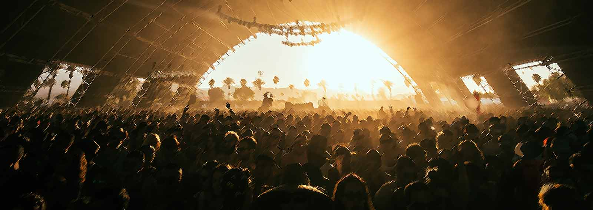

This article provides a high-level conceptual understanding of how Monero works. For low-level detail
please read our article
A low-level explanation of the mechanics of Monero vs Bitcoin in plain English.

Stealth addressing and unlinkability
When you send someone money, they can't tell it came from you (unless you tell them). When you tell someone your Monero wallet 'address' to allow someone to send money to you,
no one else can know how many or if any payments at all have been sent to you. If someone sends money to you twice, no one can even tell that two payments were sent to the same
person.
Confidential transaction amounts
People observing the Monero network can't see the value of funds that are being anonymously transferred.
Untraceability
Even if someone knew about specific anonymous funds that you control, they cannot tell if or when you spend those funds. They cannot tell whom you've sent those funds to, because
it will look to the world as if people may be using your funds in their own transactions all the time. (This is achieved through a cryptographic mechanism called a ring signature).
The Monero dance
Because of the untraceability mechanism described above, other Monero users will start randomly including your anonymously received
funds as a plausible source of funds in their own transactions.
Think of Monero as a dance floor, where other people are wearing facemasks mimicking the appearance of randomly selected multiple other dancers including you. No one can claim they saw you dancing with any particular person, because they know they could just as easily have been observing someone else dancing while wearing a facemask of you.
So much 'dancing' happens within the Monero network over time that it will look to observers as if most people may have transacted with most other people. When attempting to create a list of who may have transacted with any particular person, the answer will be 'almost everyone!'.
This underscores the importance of Monero's design decision to enforce untraceability for all transactions. If untraceability were optional, as it is with Bitcoin or Zcash,
then the
size of the 'dance floor' would be much smaller. What's the point of being anonymous within a crowd if that crowd is only very small and the people in that crowd are only
temporarily turning up when they have something to hide? Monero ensures that all users constantly participate on the dance floor at all times. Even when you're not sending
or receiving, the Monero network is constantly making it look like you're participating on the dance floor.
Bitcoin vs Monero confidentiality
Note that Bitcoin is not designed to be able to meet any of the above requirements of a private cryptocurrency. Bitcoin does not have stealth addresses. Bitcoin payments are easily traceable to the sender’s address. Multiple Bitcoin payments to the same address can be linked unless the Bitcoin recipient creates new wallet addresses for each transaction (which is impractical e.g. for donation addresses and is problematic if the recipient wants to merge the amounts while maintaining privacy). Bitcoin observers can easily see the amounts of payments that occur.
Near future: Invisible internet project (I2P) integration
I2P will protect you from passive network monitoring, so that not only are your payments untraceable, but people snooping the network cannot tell you are even using Monero at all. I2P is considered by the Monero developers to be superior to Tor because of its support for decentralized routing and asymmetric connections which mitigate 'timing attacks'.
World class privacy research
One of the most exciting aspects of Monero is the world class research that goes into ensuring that all privacy angles are discovered and addressed.
The Monero Research Lab is a team of voluntary researchers, scientists and academics. The majority of their research findings have been
implemented into the Monero codebase.
If you'd like more details, see our
low-level explanation of the mechanics of Monero vs Bitcoin in plain English.


 monero.how
monero.how